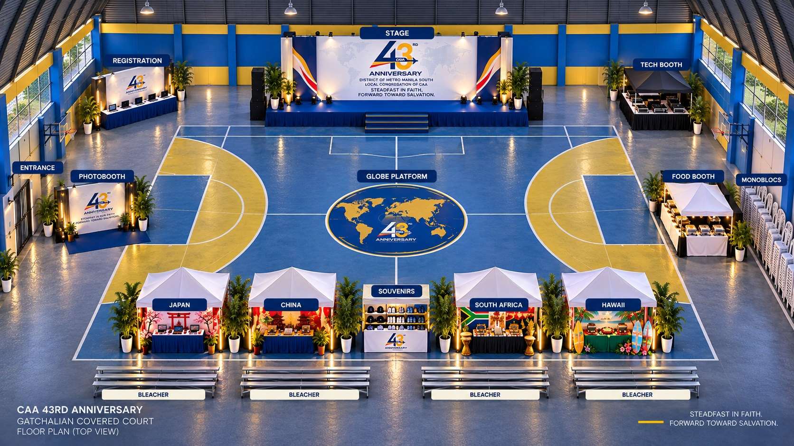

01 · Destination
Japan
Purok 1 & 6
- Experience the booth activity
- Allow about 5–10 minutes
- Get your Japan stamp
INC history: The Church reached Japan in 1977 during its expansion across Asia.
Official referenceOne faith · One community · One celebration
Steadfast in Faith, Forward Toward Salvation.
September 27, 2026Sunday
2:00 PM–5:00 PMAll activities run simultaneously
Gatchalian Covered CourtManuyo Dos, Las Piñas
Event-day guide
A simple route through your CAA 43rd Anniversary experience.
Everything you need, right here.
Find your way
Choose a destination to highlight it on the venue floor plan.

Digital companion
Use this as your personal checklist. Your physical passport is still required for official stamps.
Four destinations · One CAA
Complete the activity and collect a stamp at every destination.
01 · Destination
Purok 1 & 6
INC history: The Church reached Japan in 1977 during its expansion across Asia.
Official reference
02 · Destination
Purok 2 & 9
INC history: The first worship service outside the Philippines was held in Ewa Beach, Hawaii on July 27, 1968.
Official reference
03 · Destination
Purok 3, 4 & 5
INC history: The Kowloon congregation traces its roots to Hong Kong in 1974.
Official reference
04 · Destination
Purok 7 & 8
INC history: A group worship service in South Africa in 1977 helped begin the Church’s continuing growth across Africa.
Official referenceSunday · 2:00 PM–5:00 PM
All event areas operate throughout the same three-hour window. Visit them in any order.
Travel reminders
Help us make the event enjoyable for everyone.
Need help?
Quick answers for a smoother experience.
Enter through the marked Entrance, then proceed to Registration to receive your physical passport.
Visit all four cultural booths, complete each activity and collect the official physical stamp before leaving.
Yes. Choose whichever booth is less busy, and use the digital checklist to track your progress.
After completing all four stamps, bring your physical passport to the Souvenir Station at the front-center of the venue.
The Food Booth is on the right side of the court. Ask event staff for the nearest available restroom.
Return to Registration immediately. Staff will guide you on the event’s replacement procedure.
Approach Registration or any identified event staff member for priority assistance and accessible routing.
Please report to Registration or the Technical booth so staff can connect you with the assigned response team.